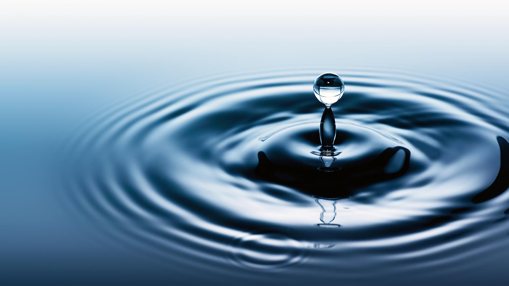

Water

Description
This is how you make water dumbass
Ingredients
- 2 liters distilled or purified water, divided
- 1.5g magnesium chloride
- 1g sodium bicarbonate
- 1g calcium chloride
Steps
- Combine 1 liter water, magnesium chloride, baking soda, and calcium chloride in a large bottle or jug and stir to dissolve to form electrolyte solution.
- Add 10 grams of the electrolyte concentrate to remaining 1 liter of water to dilute. Serve or use for cocktails. Remaining electrolyte solution can be stored in a sealed container for future dilution.